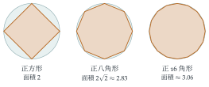

STEP III 2022、第4問
先に進む前に問題を読んでおこう。問題は、OCRが配布している2022年のSTEP問題一式（zipファイル）のSTEP IIIに収録されている： www.ocr.org.uk/Images/696587-2022-past-papers.zip
導入
この問題の最後の行は、数学で最も美しい公式の一つであり、この種の公式としては最も古いものの一つでもある。この公式は1593年にフランスの法律家であり数学者でもあったヴィエト（François Viète）によって発表された。\(\pi\) を無限の過程の結果として厳密に表したのは、これが史上初めてであった。ヴィエト以前には \(\pi\) は近似することしかできなかったが、ヴィエト以後は、どこまでも続ければすべての桁を与える公式によって \(\pi\) を定義できるようになったのである。
この公式は不思議な姿をしている。\(2\) の入れ子になった平方根は、いったいどこから出てくるのだろうか。この問題は、それが倍角公式（double-angle formula）を繰り返し用いることから生じることを明らかにし、その途中で、同じ仕組みからもう一つの、あまり知られていない \(\ln 2\) の公式も導く。
取りかかる前に
\(\sinh\) の倍角公式はどのようなものか。（自信がなければ、\(\sinh 2y\) と \(\sinh y \cosh y\) を指数関数で表して比べてみよ。）
\(\sin 2y = 2\sin y\cos y\) とまったく同様に、\(\sinh 2y = 2\sinh y\cosh y\) である。この一つの恒等式（identity）を何度も繰り返し使うことが、問題全体を動かす原動力となる。問題は最後の小問までは双曲線関数（hyperbolic function）を扱い、最後の小問で通常の三角関数に切り替える。
順を追って解く
段階 1 繰り返し半分にする
\(n = 1\) の場合は、\(y = x/2\) とした倍角公式そのものである： \[\sinh x = 2\cosh\left(\frac{x}{2}\right)\sinh\left(\frac{x}{2}\right).\]
\(n\) のときに公式が成り立つと仮定する。最後の因数は \(\sinh(x/2^n)\) である。\(n + 1\) の場合の公式を得るには、これをどう書き換えればよいか。
これに倍角公式を適用すると \(\sinh(x/2^n) = 2\cosh(x/2^{n+1})\sinh(x/2^{n+1})\) となる。これを代入すると \[\sinh x = 2^{n+1}\cosh\left(\frac{x}{2}\right)\cdots\cosh\left(\frac{x}{2^n}\right)\cosh\left(\frac{x}{2^{n+1}}\right)\sinh\left(\frac{x}{2^{n+1}}\right),\] となり、これは \(n + 1\) の場合の公式である。数学的帰納法（induction）により、すべての \(n\) について成り立つ。■
後半の主張を導くには、両辺を \(x\) で割り、さらに両辺に \(\dfrac{x/2^n}{\sinh(x/2^n)}\) を掛ければよい。右辺では \(2^n \sinh(x/2^n) \cdot \dfrac{x/2^n}{x\,\sinh(x/2^n)} = 1\) となり、cosh の積だけが残る。■
段階 2 極限
級数（series）展開から、\(y \neq 0\) のとき \[\frac{\sinh y}{y} = 1 + \frac{y^2}{3!} + \frac{y^4}{5!} + \cdots,\] であり、これは \(y \to 0\) のとき \(1\) に近づく。よってその逆数 \(y/\sinh y\) も \(1\) に近づく。（もっと慎重に議論したければ次のようにする。残りの項 \(\frac{y^2}{3!} + \frac{y^4}{5!} + \cdots\) に現れる階乗はどれも \(6\) 以上なので、\(0 < |y| < 1\) のとき残りの項は高々 \(\frac{1}{6}\bigl(y^2 + y^4 + \cdots\bigr) = \frac{y^2}{6(1-y^2)}\) であり、これは \(0\) に近づく。）
ここで、小問 (i) において \(x\) を固定して \(n \to \infty\) とする。すると \(y = x/2^n \to 0\) なので、左辺は \(\dfrac{\sinh x}{x} \times 1\) に近づく。右辺は部分積（partial product）であり、したがってこれは \(\dfrac{\sinh x}{x}\) に近づく。これこそが無限積（infinite product）の意味するところである。■
段階 3 \(\ln 2\) の公式
\(x = \ln 2\) とすると \(e^{x/2} = \sqrt2\) なので \[\cosh\left(\frac{x}{2}\right) = \frac{2^{1/2} + 2^{-1/2}}{2} = \frac{2 + 1}{2\sqrt2} = \frac{3}{2\sqrt2}.\] 同様に \(e^{x/4} = 2^{1/4}\) なので \(\cosh(x/4) = \dfrac{2^{1/4} + 2^{-1/4}}{2}\) であり、分子と分母に \(2^{1/4}\) を掛けると \(\dfrac{2^{1/2} + 1}{2 \times 2^{1/4}}\) となる。■
\(\cosh(x/2^k)\) の一般的なパターンはどうなるか。分母 \(2 \times 2^{1/2^k}\) をすべて掛け合わせると何が起こるか。
同じ計算により、すべての \(k \geq 1\) について \[\cosh\left(\frac{x}{2^k}\right) = \frac{1 + 2^{1/2^{k-1}}}{2} \times 2^{-1/2^k}.\] が得られる。（\(k = 1\) のときこれは \(\frac{1 + 2}{2} \times 2^{-1/2} = \frac{3}{2\sqrt2}\) であり、先ほどと一致する。）\(k = 1, 2, 3, \ldots\) にわたって掛け合わせると、\(2\) の累乗はまとまって \(2^{-(1/2 + 1/4 + 1/8 + \cdots)} = 2^{-1}\) となり、最初の分数は \(\frac{1+2}{2} = \frac32\) である。したがって無限積は \[\frac32 \times \frac12 \times \frac{1 + 2^{1/2}}{2} \times \frac{1 + 2^{1/4}}{2} \times \frac{1 + 2^{1/8}}{2} \cdots.\] となる。一方、\(\sinh(\ln 2) = \frac{2 - \frac12}{2} = \frac34\) なので \(\dfrac{\sinh x}{x} = \dfrac{3}{4\ln 2}\) である。両辺の因数 \(\frac34\) が打ち消し合い、 \[\frac{1}{\ln 2} = \frac{1 + 2^{1/2}}{2} \times \frac{1 + 2^{1/4}}{2} \times \frac{1 + 2^{1/8}}{2} \cdots. \qed\] が残る。
段階 4 ヴィエトの公式
小問 (iv) には \(\pi\) が含まれているので、双曲線関数ではなく通常の三角関数から来ているはずである。小問 (i) と (ii) の議論は、\(\sinh\) と \(\cosh\) の代わりに \(\sin\) と \(\cos\) を用いてもすべてそのまま成り立つだろうか。
成り立つ。帰納法で用いたのは倍角公式だけであり、\(\sin 2y = 2\sin y\cos y\) である。極限で用いたのは \(y \to 0\) のとき \(\frac{\sin y}{y} \to 1\) となることだけであり、これは \(\sin y = y - \frac{y^3}{3!} + \cdots\) から同様に従う。したがって \(x \neq 0\) のとき（さらに、途中でどの因数も \(0\) にならないよう \(x\) は \(\pi\) の倍数でないとする） \[\frac{\sin x}{x} = \cos\left(\frac{x}{2}\right)\cos\left(\frac{x}{4}\right)\cos\left(\frac{x}{8}\right)\cdots.\]
左辺が \(2/\pi\) となるように \(x\) を選び、最初のいくつかの因数を計算せよ。半角公式（half-angle formula）\(\cos\frac{\theta}{2} = \sqrt{\frac{1 + \cos\theta}{2}}\)（\(0 \leq \theta \leq \pi\) のとき）が役に立つ。
\(x = \frac{\pi}{2}\) とする。すると \(\frac{\sin x}{x} = \frac{1}{\pi/2} = \frac{2}{\pi}\) であり、因数は \(\cos\frac\pi4, \cos\frac\pi8, \cos\frac{\pi}{16}, \ldots\) である。最初の因数は \(\cos\frac\pi4 = \frac{\sqrt2}{2}\) である。ある因数が \(\cos\theta = \frac{c}{2}\) であれば、半角公式により次の因数は \[\cos\frac{\theta}{2} = \sqrt{\frac{1 + c/2}{2}} = \frac{\sqrt{2 + c}}{2}.\] となる。よって分子は \(\sqrt2\)、\(\sqrt{2 + \sqrt2}\)、\(\sqrt{2 + \sqrt{2 + \sqrt2}}\)、…と続き、それぞれ直前のものに \(2\) を加えて平方根をとったものである。これがヴィエトの公式である。■
振り返り
積の打ち消し合い。 小問 (i) の恒等式は、ある種の和が打ち消し合って縮む（telescoping）のとまったく同様に、潰れていく積である。
まず有限の恒等式、次に極限。 第 2.4 節 と同様に、すべての段階は有限の \(n\) について厳密であり、必要な極限はごく単純な \(\frac{\sin y}{y} \to 1\) だけであった。
双曲線関数と三角関数は双子である。 同じ証明がどちらにも通用したのは、両者が同じ倍角公式と同じ小さい角での極限を満たすからである。これは偶然ではない。第 5.7 節 で見るように、\(\cosh(\mathrm{i}x) = \cos x\) なのである。
背後にある数学
ヴィエトの公式には、アルキメデス（Archimedes）にまでさかのぼる幾何学的な意味がある。半径 \(1\) の円に内接する \(2^n\) 辺の正多角形（regular polygon）の面積は \(A_n = 2^{n-1}\sin\frac{2\pi}{2^n}\) である。辺の数を2倍にすると、面積は \[\frac{A_{n+1}}{A_n} = \frac{2^n \sin(\pi/2^n)}{2^{n-1}\cdot 2\sin(\pi/2^n)\cos(\pi/2^n)} = \frac{1}{\cos(\pi/2^n)}.\] 倍になる。正方形（\(A_2 = 2\)）から出発して限りなく2倍を繰り返すと、面積は円の面積 \(\pi\) に近づく。よって \(\pi = 2 \div \bigl(\cos\frac\pi4 \cos\frac\pi8 \cos\frac{\pi}{16}\cdots\bigr)\) となり、これがヴィエトの公式である。積の各因数は、図 2.5.1 の連続する二つの多角形の面積の比である。

無限積
ヴィエトの積は、数学における最初の無限積であった。その後にも続くものがあった。ジョン・ウォリス（John Wallis）は1655年に \(\frac{\pi}{2} = \frac{2}{1}\cdot\frac{2}{3}\cdot\frac{4}{3}\cdot\frac{4}{5}\cdot\frac{6}{5}\cdot\frac{6}{7}\cdots\) を発見し、オイラー（Euler）による \(\frac{\sin x}{x}\) の積表示は 第 2.4 節 に登場した。大学では、無限積がどのような場合に収束（converge）するかを学ぶ。おおまかに言えば、小さな正の \(a_n\) に対する \(\prod(1 + a_n)\) は \(\sum a_n\) と同じように振る舞う。\(\ln(1 + a_n) \approx a_n\) だからである。ここでは \(1 - \cos(\pi/2^n) \approx \frac12(\pi/2^n)^2\) であり、これは毎回 \(4\) 分の1ずつ小さくなるので、積は速く収束する。
どれくらい速いか
\(n\) 個の因数を掛けた後の部分積はちょうど \(\dfrac{1}{2^n\sin(\pi/2^{n+1})}\) に等しく、その誤差はおよそ \(\frac{\pi^2}{6 \cdot 4^{n+1}}\) の \(\frac2\pi\) 倍である。新しい因数を一つ加えるごとに答えの精度はおよそ \(4\) 倍になり、小数でおよそ \(0.6\) 桁ずつ得られる。因数を10個とれば、\(2/\pi\) が小数第6位まで正しく求まる。これは悪くないが、各段階で正しい桁数を2倍にする 第 2.6 節 の方法の速さにはとても及ばない。
思考のスキル
\(f(x)\) と \(f(x/2)\) を結びつける恒等式は、何度でも繰り返し適用できる。その結果は、極限をとると、しばしば無限和や無限積になる。
\(n\) 段階後の「残り」の項（ここでは \(2^n\sinh(x/2^n)\)）に注目し、その極限を別に求めよ。このパターンは、無限積からフラクタルの構成に至るまで、解析学のいたるところに現れる。
次の一歩
1990年版。 STEP I 1990、第8問 に取り組んでみよ。この問題は、\(\sin\) の倍角公式以外は何も使わずに、本節とは別の道筋でヴィエトの積に到達する。どちらの方法がより自然だと感じるだろうか。
別の角度。 \(\frac{\sin x}{x}\) の積表示で \(x = \frac{\pi}{3}\) として、\(\frac{3\sqrt3}{2\pi}\) を無限積で表し、最初の二つの因数を簡単にせよ。
因数はいくつ必要か。 電卓を用いて、\(\pi\) を小数第 \(4\) 位まで正しく求めるにはヴィエトの積の因数がいくつ必要かを調べよ。また、因数を一つ増やすごとにおよそ \(0.6\) 桁ずつ精度が上がる理由を説明せよ。
\(\ln 3\) の公式。 \(x = \ln 3\) として小問 (iii) を繰り返し、\(\frac{1}{\ln 3}\) を無限積で表せ。\(\frac{1}{\ln 3}\) を小数第2位まで求めるには因数がいくつ必要か。この積がヴィエトの積よりも収束が遅いのはなぜか。
さらに学ぶために
Petr Beckmann, A History of \(\pi\)（St Martin’s Press）。『π の歴史』。アルキメデス、ヴィエト、ウォリスらの物語が熱のこもった筆致で語られる。
Jonathan Borwein & Peter Borwein, Pi and the AGM（Wiley）。『π と算術幾何平均』。第 2.6 節 の方法を含む、\(\pi\) の計算の本格的な数学。本章を読み終えていれば、第 1章は十分に読める。
Eli Maor, Trigonometric Delights（Princeton University Press）。『三角法の楽しみ』。ヴィエトとその積についての章がある。